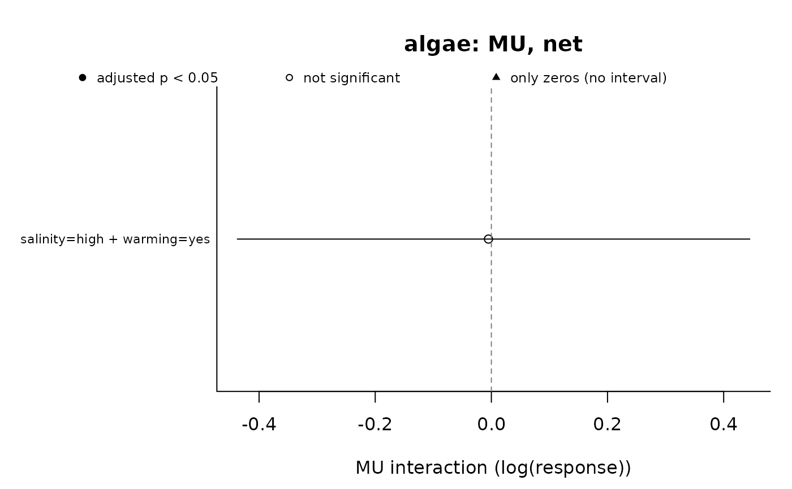

summary() counts, for each response, sampling time, null model and
estimand, the interactions that were tested and those that deviate from
the null model, tabulates their classes (see classify_interactions())
and, with two or more null models, how often they agree (see
compare_null_models()). plot() draws the estimated interactions of
one response and null model with their intervals.
Arguments
- object, x
A
must_interactionsobject fromestimate_interactions().- alpha
Significance level applied to the adjusted p-values. Default 0.05.
- ...
Further arguments passed to
graphics::plot.default()(for examplemainorxlim); ignored bysummary().- response
Name of the response to plot. Default: the first one.
- null_model
Null model to plot, among those estimated:
"AD"(default),"MU","DO","BL","SAM"or"CA".- estimand
"net"(default) or"pure".- time
Sampling times to plot (as text, including
"overall"). Default: all.
Value
summary() returns an object of class
summary.must_interactions, a list with interactions (one row per
response, time, null model and estimand: n_sets, n_tested (status
"ok" or "boundary"), n_deviating (adjusted p-value below
alpha), n_positive, n_negative, n_boundary, n_not_estimable
and n_other (not identifiable, not defined or not applicable)),
classes (number of sets of each class per response, time and null
model), agreement (with two or more null models: number of
interactions per response, time and estimand that are n_robust,
n_model_dependent, n_conflicting, n_none or n_not_compared;
NULL otherwise), verdicts (with an equivalence margin in
estimate_interactions(): number of interactions per response, time,
null model and estimand with each verdict, n_deviation,
n_negligible, n_equivalent and n_inconclusive; NULL otherwise)
and settings. plot() returns x invisibly.
Details
In the plot, filled points are interactions whose adjusted p-value is
below alpha, open points the rest. Interactions tested from a
combination with only zeros (status = "boundary") have no interval and
are drawn as triangles; infinite estimates (MU with a combination of
zeros) are drawn at the edge of the plot. Rows without an estimate are
left out.
Examples
jars <- expand.grid(
salinity = c("ambient", "high"),
warming = c("no", "yes"),
replicate = 1:5,
stringsAsFactors = FALSE
)
jars$jar <- seq_len(nrow(jars))
mu <- 40 * ifelse(jars$salinity == "high", 0.5, 1) *
ifelse(jars$warming == "yes", 0.5, 1)
jars$algae <- stats::qpois(c(0.2, 0.35, 0.5, 0.65, 0.8)[jars$replicate], mu)
design <- describe_design(jars, c("salinity", "warming"),
control = c(salinity = "ambient", warming = "no"), unit = "jar")
fits <- fit_responses(jars, "algae", design, residual_checks = FALSE,
seed = 1, quiet = TRUE)
est <- estimate_interactions(fits, null_models = c("AD", "MU"), n_sim = 2000, seed = 1)
summary(est)
#> Interactions: Krinsky-Robb simulation; small-sample correction; adjusted p-values (BH) below 0.05
#> Deviating / tested interactions by sampling time:
#> response model estimand all
#> algae AD net 1/1
#> algae MU net 0/1
#>
#> Classes of the net deviations (Piggott et al. 2015) by sampling time:
#> response model all
#> algae AD 1 -A
#> algae MU 1 AD
#>
#> Agreement between null models (AD, MU), robust/model-dependent/conflicting/none:
#> response estimand all
#> algae net 0/1/0/0
#>
#> Counts of boundary tests and of rows not estimated: `$interactions`; classes: `$classes`.
plot(est, null_model = "MU")
